Análisis comparativo de los planes y los debates presidenciales de la segunda vuelta — Junio 2026
Mide qué tan consistente fue cada candidato en debate respecto a su plan escrito. Fórmula:
(CONSISTENTE + AMPLÍA_DEBATE) / (CONSISTENTE + AMPLÍA_DEBATE + VAGUEA + CONTRADICE_DEBATE).
No penaliza OMITE ni NUEVO_DEBATE.
Visualización de las relaciones entre candidatos, los 22 temas comunes y sus comparaciones plan-vs-plan. Arrastra los nodos, usa scroll para zoom y pasa el cursor por encima para detalles.
Una vez que el candidato ganador asuma el gobierno el 28 de julio de 2026, este panel registrará el cumplimiento real de sus promesas. Las propuestas con tipo «100 días» y las metas cuantitativas ALTA son las que más fácilmente se pueden auditar y se listan abajo. Hasta que arranque la gestión todas aparecen como PENDIENTE o SIN DATO.
| Candidato | Compromiso | Tema | Estado | Evidencia |
|---|
Propuestas tipo: meta con relevancia ALTA: tienen una cifra o plazo explícito que permite auditar el cumplimiento al final del mandato.
| Candidato | Propuesta | Meta cuantitativa | Tema | Estado |
|---|
Las fuentes esperadas son: decretos supremos y leyes (El Peruano), informes del MEF y Contraloría, prensa verificada y reportes de think tanks (IEP, CIES, Grade, Proética).